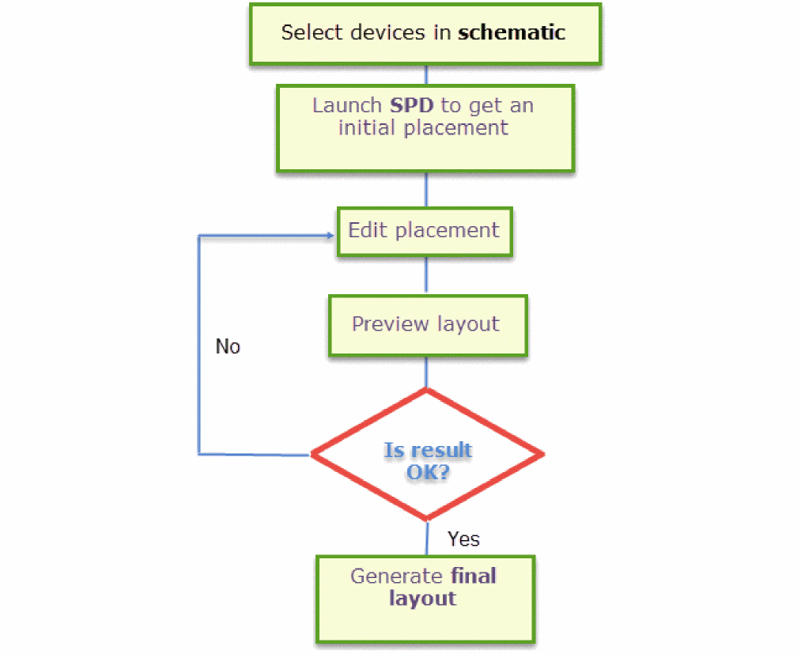
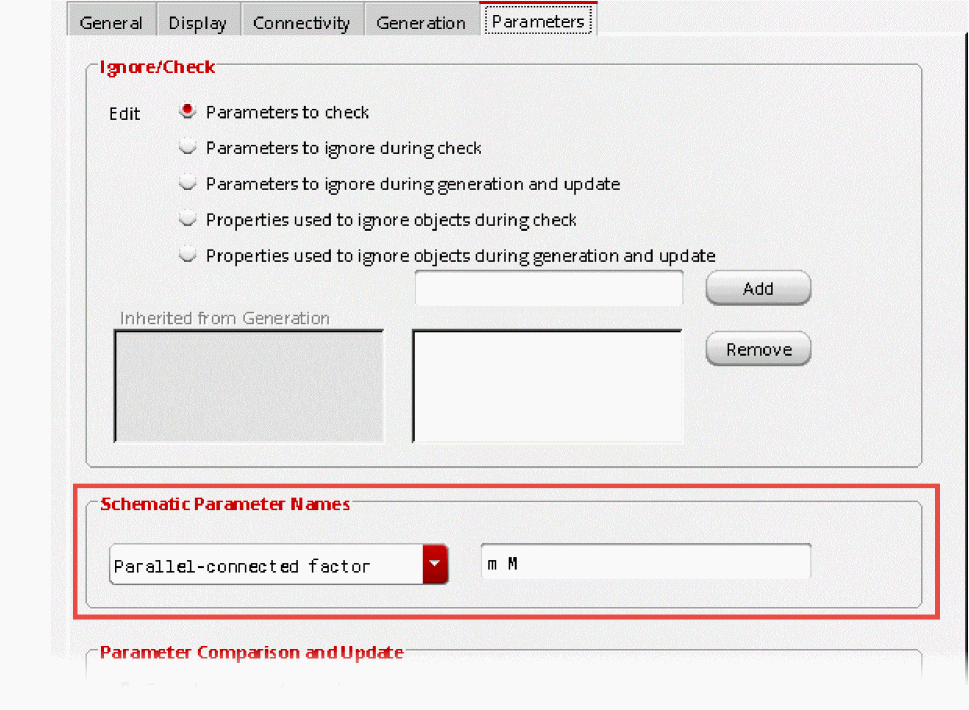

1
Introduction to Symbolic Placement of Devices
Virtuoso® Symbolic Placement of Devices (SPD) is a symbolic row-based placer that displays only the necessary information required to perform device placement in the physical design environment.
The main focus of this tool is to improve productivity of the layout designers by facilitating quick and easy placement of PMOS and NMOS devices in medium-sized designs comprising around 100 to 200 devices. The tool makes it simple to edit device placement, preview the updates made, and then generate a layout.
This section covers the following topics:
Benefits of using SPD
SPD uses the intuitive ‘stick-diagram’ methodology that lets the layout designers visualize a lighter layout, which is easier to understand and work with.
The tool provides three main benefits:
- Symbolic: Symbolically-represented devices are easier to understand and manipulate than real ones.
- Simplicity: The simple use model of the SPD commands enables device placement in just a few mouse clicks.
-
Speed: Editing in SPD is much faster than editing real devices on the main layout canvas.
Due to the growing complexity of design rules for real devices, heavy computations are often involved starting from pcell evaluation to device placement. Several applications also perform complicated post-processing to ensure that every step is free of any DRC errors. SPD helps to avoid most of these tasks during editing; the complexity comes in only during preview when converting symbolic devices to real ones.
The SPD Flow
The basic SPD flow, involves following tasks:
- Select the devices you want to edit in Schematic XL.
- Launch SPD to view the symbolic representation of the selected devices.
- Place the selected devices to meet your requirements by performing tasks such as, abutting, swapping, stacking, and flipping devices.
- Preview the edited layout.
- Make any required adjustments to the placement in the SPD window.
-
When you are satisfied with the results, generate the layout.

For a video on SPD flow, see
Prerequisites for Running SPD
SPD can run only on a Layout XL compliant PDK library that includes well-defined component types, parameter name mappings, permute rules, layer functions, and minimum spacing rules. This section discusses prerequisites for running SPD in detail.
Source Schematic File
You can launch SPD directly from an existing layout, however, the source schematic is always needed as a reference. If some instance parameters in the layout instances are different from those in the schematic, SPD will always take the values from the schematic.
Configured Physical Hierarchy of Target Layout
The SPD launch process refers to the physical configuration (CPH) of the target layout and carries it to the next session when the Reuse Window for Faster Relaunch option is enabled in Setup Options Pane.
If for any reason, the setting for target layout is modified in CPH, you must disable the Reuse Window for Faster Relaunch option and re-launch SPD for the new physical configuration take effect.
Component Types
SPD supports the following component types for cells. These component types must be set before running SPD.
To check component types, in the Layout XL window, choose Edit – Component Types to display the Configure Physical Hierarchy window in Component Types mode.
For more information on defining and assigning component types, see
Parameter Name Mapping
- Set width parameter name.
- Set finger parameter name.
- Set multiplication factor parameter name.
- Check the Evaluate CDF callbacks during generation and update option.
To check the these parameters, in the Layout XL window:
-
Choose Options – Layout XL – Parameters.
 - Set width parameter name.
- Set finger parameter name.
- Set multiplication factor parameter name.
Permute Rules
The permuteRule property must be defined for the instances in the design to make the instance pins or terminals permutable.
For information on how to check and add a permuteRule, see
Layer Functions and Minimum Spacing Rules
To run SPD, certain material functions and their layers must be specified in the technology file. It is also important that minimum spacing rules are set correctly for these layers.
The following are mandatory functions that must be included in the technology file:
-
metal -
diff-
Layers of
difffunction must also be defined in the technology file. - If the minimum spacing rule of the layer is not available, you will have to adjust it manually in SPD by setting the value of the X:OD field in the Generation Options pane.
-
Layers of
The following are optional functions that can be included in the technology file:
-
ndiff-
If the minimum spacing rule of the
ndifflayer is not available, you can set it manually in SPD by setting the value of the POD-NOD field in the Generation Options pane.
-
If the minimum spacing rule of the
-
pdiff-
If the minimum spacing rule of the
pdifflayer is not available, you will have to adjust it manually in SPD by setting the value of the POD-NOD in the Generation Options pane.
-
If the minimum spacing rule of the
-
poly-
If the minimum spacing rule of the
polylayer is not available, you will have to adjust it manually in SPD by setting the value of the Stack Spacing field in the Stack Options pane. -
(ICADVM20.1 Only) If the minimum spacing rule of the
polylayer is not available, you may have incorrect placement results if you specify value of the X: OD option asDummyPolyin Generation Options pane.
-
If the minimum spacing rule of the
-
nwell- This value is required when the Prevent well shorts is set in the Generation Options pane.
-
pwell- This value is required when the Prevent well shorts is set in the Generation Options pane.
For more information on defining layer functions, see
For more information on defining minimum spacing rules, see
Libraries Defined to Execute SPD
SPD defines two libraries in cds.lib, cdsSymbolicDevice and cdsSymbolicLib.
cdsSymbolicDevice
The following entry is added to cds.lib:
DEFINE cdsSymbolicDevice $CDS_INST_DIR/tools/dfII/etc/cdslib/cdsSymbolicDevice
Symbolic device is an instance that creates a relationship between schematic devices and the layout instance. This library is essential for SPD to work because it contains the symbolic devices used in SPD, which are compatible with the current tool version. This entry is not added to cds.lib by default. It is added automatically when SPD is launched.
cdsTmpSymbolicLib
The following entry is added to cds.lib:
DEFINE cdsTmpSymbolicLib ./.cadence/dfII/spd/cdsTmpSymbolicLib
This is the default temporary library required to process SPD. Information from the working schematic and layout cellview is copied to this library and then, used to build a relationship, such as in the CPH file.
This library gives user the write permission to save updates made in SPD or save recovery information in case of a crash.
In case, you don't want to use the default temporary library, you can specify a different library using the spdDesignLibName environment variable.
User-Defined Abutment Callback Functions (ICADVM20.1 Only)
For PDK-specific abutments, such as dummy poly abutment, other than the regular oxide diffusion (OD) abutment, you will also need to define your own custom abutment callback functions. To enable user-defined abutment, you must load the callback functions required by the spdRegUserAbutProc SKILL function and register them before launching SPD. Otherwise, only oxide diffusion abutment will take place.
User-Defined Flow Callback Functions
SPD also supports user flow callbacks that further help in customizing the design in specific steps of the SPD flow. For more information, see
For a video on user-defined abutment and callback functions, see
Return to top